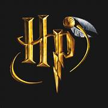

L’Histoire Enchantée de Harry Potter et de Poudlard

Harry Potter, un jeune orphelin, découvre le jour de son onzième anniversaire qu'il est un sorcier. Il est alors invité à intégrer Poudlard, une école de sorcellerie légendaire en Écosse. Fondée par les quatre grands sorciers Godric Gryffondor, Salazar Serpentard, Rowena Serdaigle et Helga Poufsouffle, Poudlard est divisée en quatre maisons, chacune valorisant des traits spécifiques : courage, ambition, intelligence et loyauté.
À Poudlard, Harry est réparti dans la maison Gryffondor, où il se lie d’amitié avec Ron Weasley et Hermione Granger. Ensemble, ils découvrent les mystères de l'école et se confrontent à des défis magiques. Harry apprend qu'il est célèbre dans le monde des sorciers pour avoir survécu à une attaque de Lord Voldemort, le sorcier maléfique dont la menace plane sur le monde magique.
***
La saga suit Harry au fil de ses années à Poudlard, où il affronte des dangers, découvre des secrets et lutte contre Voldemort et ses partisans pour protéger le monde des sorciers. L'histoire explore des thèmes de courage, d’amitié et de lutte entre le bien et le mal, captivant des millions de lecteurs avec un univers magique riche et complexe.
Enlever la cape d'invisibilité pour voir les sources et les coordonnées
source
daily geek show
chat-GPT
toppng
Rotten Tomatoes
mes coordonnées
Ville de Terrebonne, Quebec, Canada
J6V 1A6
Mes liens
Mon College
mon site web
Voici mon courriel
pour les bandes jai pris ma documentation sur #css debutant